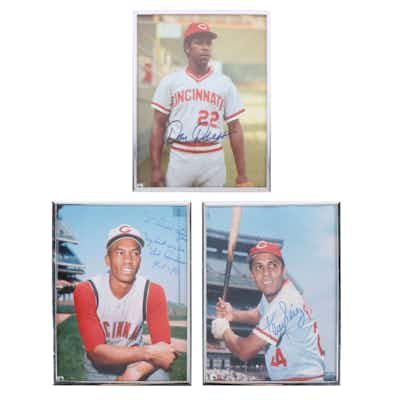

PASSThree Signed Vintage Cincinnati Reds Photos, Perez, Cardenas, and Driessen
Lot of three signed vintage Cincinnati Reds player photos (Tony Perez, Leo Cardenas, Dan D
4h left
Current bid$10 · 9 bids
Est. value$18
Your max bid$0
Margin at bid−$28
Details & price history →